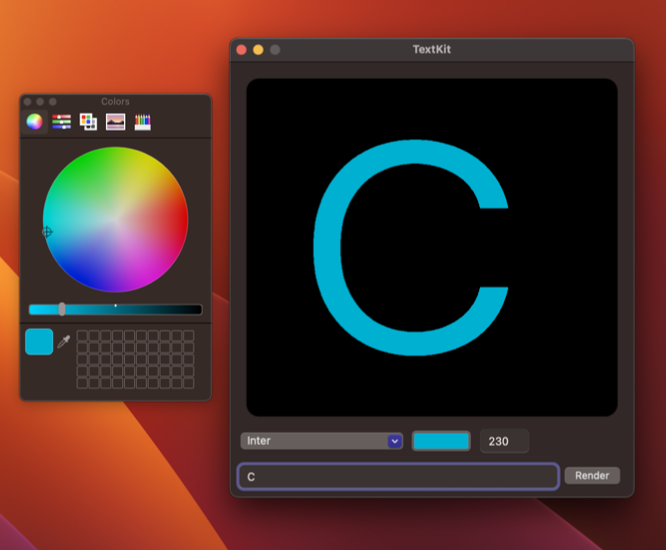
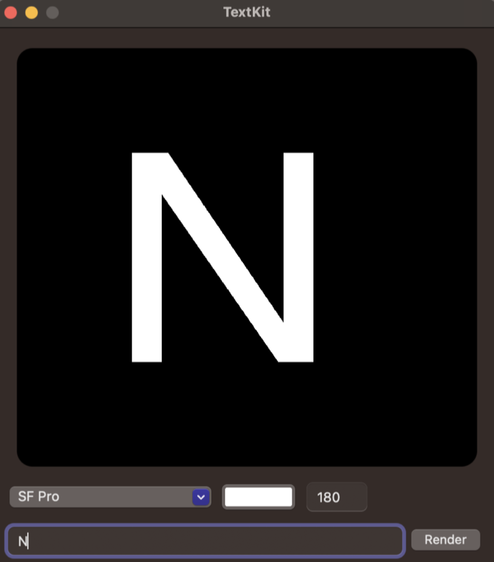
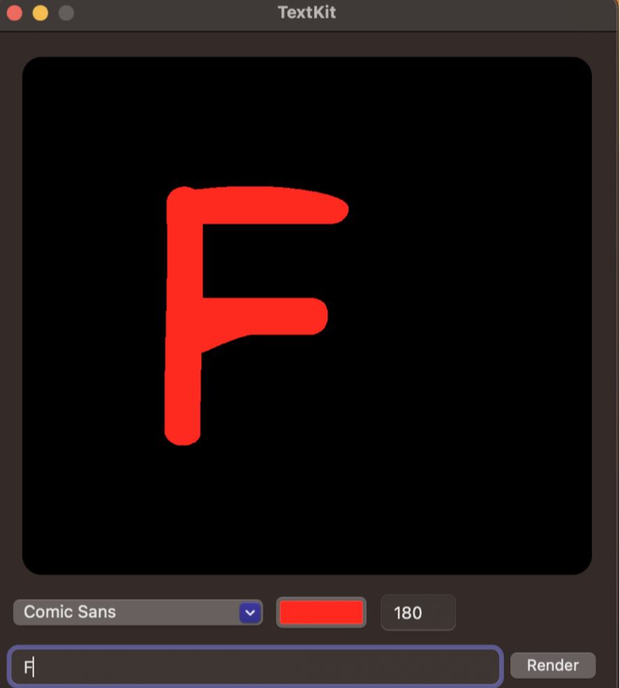
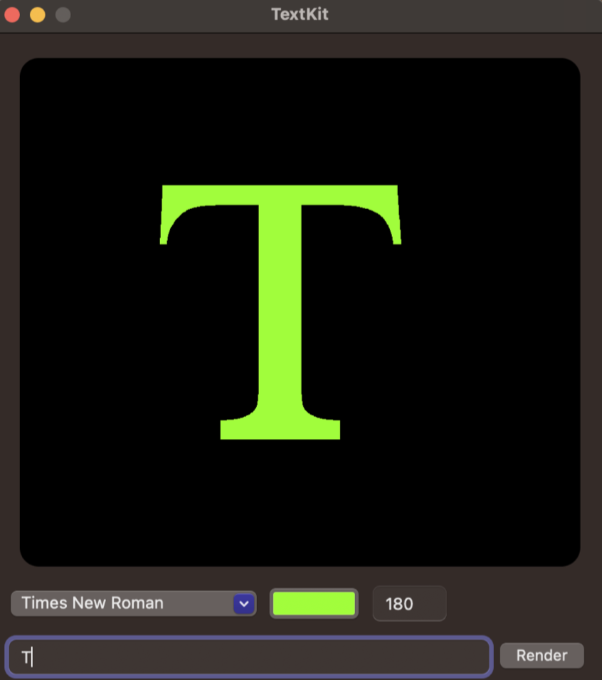
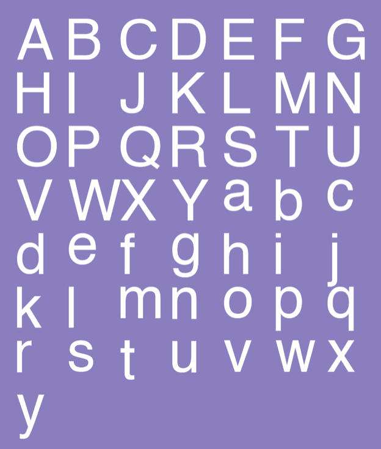

Our group implemented a C++ GPU font rendering engine for the final project. Font rendering is a crucial component for displaying text information to users on screens. Online systems, search engines, chatbots, and virtually every digital platform that requires user input utilizes a font rendering engine. Our engine works by converting TrueType Fonts (TTF) into a list of Bezier curves that are rasterized and filled using a scanline fill algorithm. The rasterized outline is then composed into an atlas, and a textured GLQuad is rendered using custom uv coordinates. This pipeline is written in C++ and provides an efficient way to render fonts on screens. Our renderer’s UI was created using Appkit framework components, and we glued it together with the rasterizer using Objective-C++ interops. All in all, our font rendering engine is successful in rendering single characters, and we look forward to scaling it into the future.
As part of our font rendering system implementation, we created a FontReader class to facilitate the processing of TrueType font files. To accomplish this, we utilized the FreeType library to extract vector paths for each glyph.
The FontReader class was responsible for several key functions, including initializing the FreeType library and loading TTF files. In particular, we implemented a loadTTF() function that loaded the font file located at a given path and returned an error code if the loading process failed. Another critical function of the FontReader class was readCurves(), which decomposed the glyph's outline into a series of straight lines and quadratic Bezier curves using FreeType's FT_Outline_Decompose function. The decomposed curves were then stored in a vector of ConicBezierCurve objects, which contained a 2D vector of startPoint, endPoint, and controlPoint.
For the frontend, we implemented a UI using objective C and AppKit (Mac only) that rendered a window with an OpenGL view, taking in user text as input and displaying a render button to eventually render a letter in the window. This UI enabled users to interact with the font rendering system easily and intuitively.
To rasterize each character, we piece the characters together in chunks onto a texture atlas and use the custom (u,v) coordinates of each character to complete a single GPU transfer. In the BezierCurves.h file, the polynomialForm method computes the intersections of the Bezier curves and the horizontal line. Then, in BezierCurves.h::solve we return a solution vector of the intersection pairs and fill the pixels between the intersection pairs.
In the rasterize method, we implemented a Scan-line Polygon Fill algorithm where we iterate through every row in each font and compute the Bezier curve for each horizontal line. Then, we fill the polygon between the intersection pairs. We also perform a memcopy of the individual bitmap data onto the texture atlas which we then transfer to the OpenGL view in GLControlView to render the pixels in the viewport.
Since OpenGL does not support rasterization of the font formats, we first manually implemented the rasterization on the CPU then provided the texturized pixel to OpenGL. Using the TrueType font library, we also had to work with quadratic Bezier curves which differed from OTF files which used cubic Bezier curves with two output control points. Another possible algorithm we could have chosen instead of the Scanline Polygon Filling algorithm was the Boundary fill algorithm, but this method requires much more manual processing to render the text so we decided to move forward with the Scanline Polygon Filling algorithm instead.
One key challenge was our attempt to integrate the nanogui from Project 4 ClothSim into our repository to render Bezier curves in the GUI. Initially, this seemed like a viable approach to achieve our goal, but as the project progressed, the repository began to get more complicated to work with due to local build errors. This complexity led to a messy codebase and hindered collaboration and progress, as everything was un-unified. To address these issues, we decided to create a new repository and adopt the Model-View-Controller (MVC) architecture pattern, using AppKit instead of nanogui. By adopting this pattern, we were able to separate the application's data, presentation, and user interface logic, making it easier to maintain and test each component independently. Moreover, AppKit's built-in functionality for handling graphics and event-driven input made it more suitable for our specific project’s needs. This decision ultimately resulted in a cleaner and more manageable codebase that facilitated collaboration and progress, enabling the team to focus on implementing the font rendering pipeline efficiently.
Our implementation of the font rendering system led to several lessons learned. First, our team gained knowledge on vector outline formats, specifically on using Bezier curves to define the boundary of letters. We also learned how to use open source font processing libraries, such as FreeType. Working in a group of 4 also taught us how to streamline processes to make
Finally, working in person together at Berkeley Way West made the process more engaging and enjoyable. Our team is grateful for each member's contributions, dedication, and perseverance, which helped them push through to complete the final project.
Demo video link (click for full animation of the font renderer in action!): https://drive.google.com/file/d/1Oct3WXd1cYDMgiKr-9gkVumQm9dio8_i/view?resourcekey
Rendering of the letter “C” in the font Inter, blue color, 230px font size:

Rendering of the letters “N”, “F”, and “T” in the font SF Pro, Comic Sans, Times New Roman, colored white, red, green, in size 180px:



Rendered textured GLQuad using custom uv coordinates

Michael: Contributed greatly to the overall technical aspects of the project, particularly the rasterization techniques and generating the quadratic Bezier curves from the outline fonts.
Patrick: Contributed to the rendering of the fonts and displaying the letters onto the viewport.
Kelly: Contributed to the UI using Apple’s AppKit by creating a color picking tool and helped with connecting the viewport with the backend code.
Rachel: Helped with scheduling team meetings and writing the technical reports of the projects.
Project Video:
In-depth Walkthrough:
https://drive.google.com/file/d/1q8iR0E-3vQEv11JkJXeweCCx8BOcaj8-/view?usp=share_link